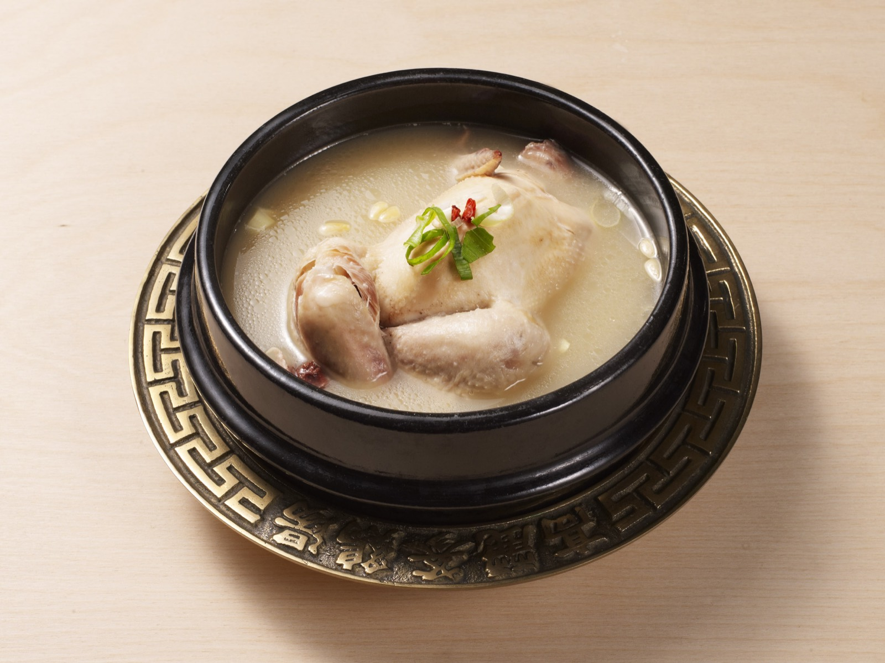

Signature
Koryo Samgyetang 고려삼계탕
Whole young chicken stuffed with sweet rice, ginseng, jujube and garlic, in a milky broth.
A whole young chicken stuffed with sweet rice, ginseng and jujube, simmered until the broth turns milky. Served bubbling in stone, with banchan, at two North York restaurants.

Our servers will walk you through it at the table. Here's the short version.
The broth is left unsalted on purpose. Add salt and pepper from the table to taste.
Pull the bird apart with your chopsticks and let the sweet rice, ginseng and jujube spill into the broth.
Dip pieces of chicken in the salt-and-pepper dish.
Spoon broth and rice together and top with radish kimchi. Ask for more banchan any time.
Sheppard stays open until midnight Thursday to Saturday.
"The servers take time to list off the side dishes provided and to explain how to eat each entree."
Juu · Yelp"This place is a hidden gem in North York! I found this place to satisfy my craving of bibimbap and some tasty Korean side dishes."
Joe · Yelp"Overall, love the ambience, great service and wonderful tasting food. Will come back!"
Sharon · YelpKoSam comes from a family that ran a beloved restaurant in South Korea for more than forty years. They brought the recipes, and the patience, to North York.
We started as Koryo Samgyetang, and our Leslie & Cummer home still goes by that name. At Yonge & Sheppard, KoSam adds a bar, fried chicken and a backyard patio.